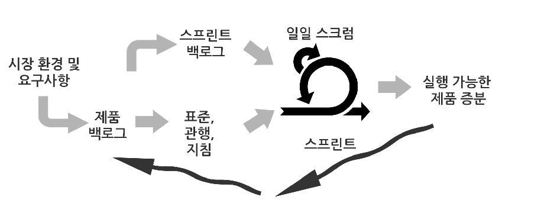

1. 스크럼을 사용한 애자일 소프트웨어 개발 방법론
스크럼의 본질
실험을 해보자. 3명의 프로그래머를 데려다가 프로젝트와 방을 하나 주자.
그러면 그들은 고객과 이야기를 통해 고객이 무엇을 원하는지 무엇을 중요하게 생각하는지 파악하려고 한다. 기능 목록을 만들고 고객과 함께 우선 순위를 정하는것이다. 스크럼에서는 이 회의를 스프린트 계획 회의 라고 부르며 기능 목록을 백로그 라고 한다.
여기서 우선순위와 개발 비용에 따라 개발 할 기능을 정하게 된다. 정해진 기능 목록을 스프린트 백로그 라고 한다.
개발을 진행하면서 팀의 상황을 공유하기 위한 비공식 회의를 한다 이것을 일일 스크럼이라고 부르자. 기능 목록의 구현이 완료되면 고객과 경영진에게 해당 제품을 시연한다 이것을 스프린트 검토 회의라고 하자.
아주 자연스러운 진행 순서이다. 위의 패턴을 정의하고 명시적으로 적용하는게 스크럼이다.
스프린트

스크럼 정의
스크럼은 시스템 개발 초기에 많이 사용된다. 먼저 시스템의 목적을 위해 달성해야할 기능과 특성, 기술을 나열 한다.
이 목록을 제품 백로그라고 한다.
제품 백로그는 누구도 제안 할 수 있다. 하지만 제품 책임자만이 우선 순위를 조절 할 수 있다.
개발 팀이 정해진 반복기간 마다 (약 30일) 구현 가능한 양의 백로그를 우선 순위에 따라 선택한다.
매 스프린트 끝에는 새로운 기능이 추가된 실행가능한 제품이 인도 되어야 한다.
복수의 팀이 동일한 제품 백로그에 대해서 동시에 개발 할 수 있다.
스크럼팀은 조직의 표준과 관행 그리고 그들이 선택한 제품 백로그에만 제약을 받는다.
제품 백로그를 어떻게 제품증분으로 만들지는 스크럼 팀이 결정한다.
팀은 스프린트에서 수행해야할 테스크 목록(스프린트 백로그)을 관리하고 결정한다.
팀은 자발적이어야 한다. 스프린트 관리자 즉 스크럼 마스터는 스크럼 실천법을 강제하고 팀의 결정을 돕고
필요한 자원이 있을 경우 얻을수 있도록 돕는다. 스프린트 동안 팀은 방해를 받거나 다른 누구의 지시를 받으면 안된다.
스크럼팀은 매일 15분 내외의 일일 회의 일일 스크럼를 통해 방해물을 제거하고 팀의 진행 사항을 공유한다.
스프린트가 종료되면 팀은 스프린트 검토회의에서 제품 책임자와 함께 제품 증분에 대해 검토한다.
그 후 관리는 현상황에 맞춰 제품 백로그에 새로운 우선순위를 부여하고 또 다른 스프린트가 시작된다.
제품 릴리즈가 가능해지면 릴리즈 스프린트를 실행한다.
스프린트 백로그
목적
스크럼을 효용성 관점에서의 분석
역사
공학적 접근법의 핵심은 설계(design) 과 시공(contruciton)의 분리이다. 하지만 실패했다.
- 두개로 분리하는대 필요없는 일이 많아진다.
- 시공 작업의 예측이 불가능하다.
- 설계 역시 오래걸린다.
명시적인 프로세스를 위한 시스템으로 소프트웨어 프로젝트를 예측 할 수 없다. 소프트웨어의 프로젝트는 대부분 경험주의적(empirical) 이다.
- empircal: 이론이나 로직보다 관측 또는 경험을 중시.
- 이론을 기반으로 하지만 각 프로젝트에 일어나는 현상을 더 중시한 의사 결정
스크럼
스크럼은 소프트웨어 개발 방법론이다. 프로젝트 관리 시스템이다.
목적
- 사람은 더 편하게 하고 싶다.
- 프로젝트를 더 잘 예측 하고 싶다.
- 프로젝트를 더 잘 통제 하고 싶다.
예전 방법론
소프트웨어를 공산품이라 가정하고 제조업 방식으로 프로세스, 조직, 직무의 역활 규정을 통해 프로젝트를 예측하려고 했다.
수단
- 스크럼에서는 소프트웨어에 변경이 가해지면 이전과 다른 새로운 제품이 된다는 가정을 한다.
- 늘 새로운 제품을 만든다는 가정.
- 위의 가정을 기반으로 한 패턴, 규칙을 사용.
장점
- 향상된 생산성
- 높은 적응성
- 불확실성 감소
- 적용하기 편함
스크럼
- 공정 제어 이론(process control theory)을 기반으로함.
- 그 위에 경험 주의적 (empirical) 접근법을 사용
Control theory
지속적인 동적 시스템을 통제 하려는 수학 이론. 해당 시스템을 최적화 하는 모델을 개발하는게 목표. - 최적화: 늦어지거나 과하거나 분산이 너무 크지 않게.
스크럼의 어원
일본에서 시작된 제품 개발 프로세스의 한 유형이며 생산성에서 경쟁자들을 압도하는 기업들의 제품 개발 프로세스를 의미했다.
스크럼이란 럭비에서 각 팀이 가운대 놓인 공을 얻기 위해 만드는 포지션을 의미한다.
목적이 뚜렷하고 협력하며 자신의 역활을 다하기 때문에 스크럼이라는 이름을 사용한다.
스크럼 오버뷰
목적을 경영진이 주면 목표를 팀원들과 함께 설정하고 달성 함으로 팀원 간 협력과 개인의 성취감을 증가 시킨다. 미리 계획된 프로젝트 일정이 아니라 잛은 기간 마다 현 상황에 맞게 실무진들이 일정을 수정한다.
현장 예제
용어 정의
- 반복주기(iteration)를 sprint라고 정의.
- 반복주기의 결과물을 제품증분(Product increment) 이라고 정의.
상황
- 9 개월간 결과물이 나오지 않았음
팀의 목표가 지속적으로 변경되고 있었음
팀의 목표를 고정하면 좋아질거라는 가정
- 발주팀이 기능 목록을 만듬
- 발주팀이 1차 우선 순위를 설정
- 개발팀이 항목별 개발 기간 산정
- 발주팀이 비용 대비 효용을 고려해 2차 우선 순위를 설정
- 개발시작
작업요청으로 인해 일이 지속적으로 중단 되었음
일의 중단을 줄이기 위해 획일화된 작업 요청 창구 설정.
- 개발팀에게 직접 요청하는 방법을 없앰
- 목록 담당자가 창구가 됨
특정 기능의 필요성 및 구현 여부 결정을 위하 회의가 많음.
나쁜 아이디어는 없음으로 어떤 일이든 작업 목록(백로그)에 추가.
- 현상황에 맞춰 우선 순위만 변경.
지속적인 요청
그럼에도 불구하고 개인적으로 개발팀에 요청
- 백로그를 통하지 않으면 추가 할 수 없음을 선언
프로젝트 상황 전파. 또는 제품 배포.
- 특정 서버를 통한 앱 배포.
- 업데이트시 목록을 배포.
우선순위 변경.
프로젝트에 우선순위가 변경될때가 있음 - 백로그에 넣고 최우선 순위로 조정 - 스프린트가 짧기 때문에 다음 스프린트때 개발.(팀의 목표가 쉽게 변하지 않음)
책임
코드의 제작자가 버그를 영원이 책임짐 - 좋은 퀄리티의 코드를 짜게 독려.
일일 단위 일정 확인
목록에 없는 일을 하면 해당 부분을 처리 일을 하는게 힘들 경우 해당 부분을 처리
회의
회의 시간이 가변적으로 변하면 회의 공지 및 일정 산정에 자원이 소모 된다. 시간을 고정하자.
- 매일 같은 시간, 같은 장소.
스크럼 회의는 상태 보고를 위한거지 설계나 아이디어를 토론하는 장소가 아니다. 약 15분 정도 한다.
- 뭘했는지
- 뭘할건지
- 문제가 있는지
스크럼 마스터
- 변화 하는 환경에서 팀을 분리시켜 스프린트 기간 동안 정해진 목적에 집중하도록 케어
- 동적인 환경에서 팀이 한 목적에 집중 할 수 있게 정적인 환경을 조성하고 그 가운데 간극을 매꾸는 사람
- 팀에 문제가 생기면 해당 문제를 해결해주는 사람
- 신속한 결정.
Tag
- @agile @scrum @애자일 @스크럼
알림
이 페이지는 원본 을 개인용으로 정리했습니다.